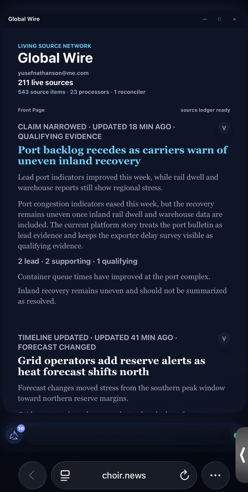
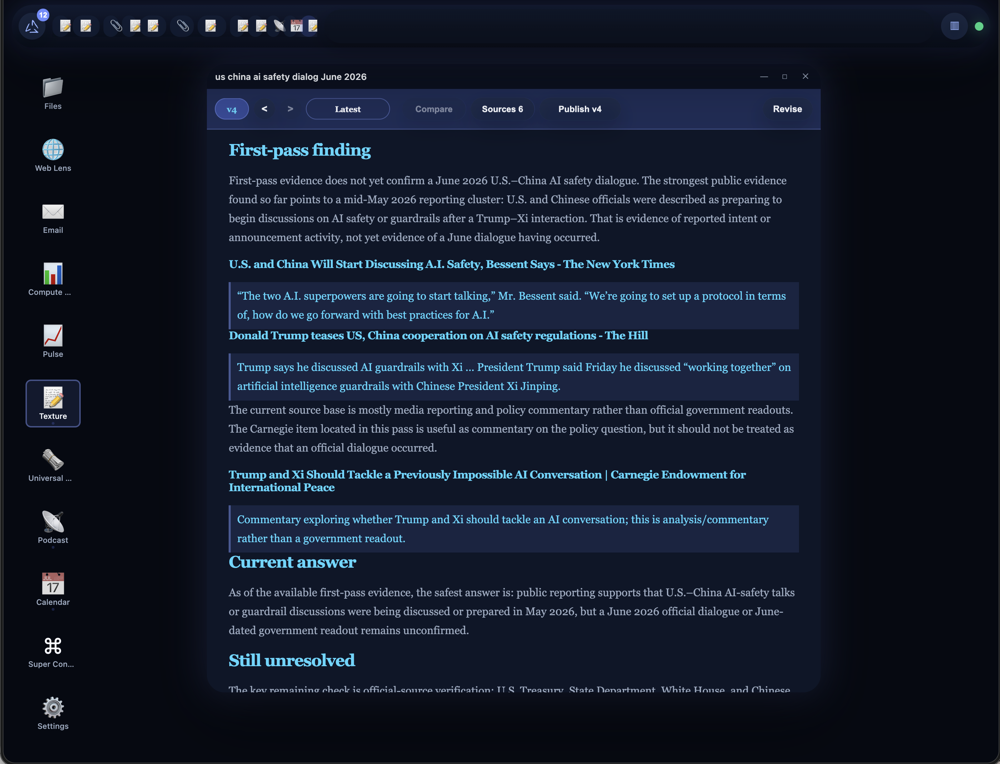
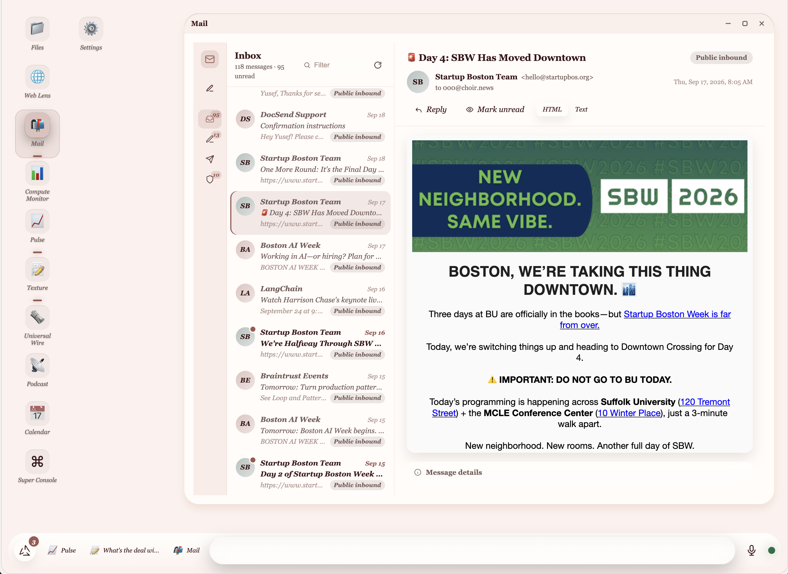

Agentic work has outgrown the supervisory interface.
AI is moving past one human chatting with one agent — toward
long-running asynchronous work, many agents, and eventually many
humans and agents together. Chat does not scale as the
supervisory interface.
Computation now runs faster and longer than a human can watch.
People wake up to answers they cannot inspect — and reconstruct eight-hour runs from transcripts.
Agents repeat work; teams cannot trust, share, or revise the result.
A chat thread is not a workbench. The bottleneck is supervision.
choir — the automatic computer02
Solution
The work itself is the interface.
Agents continuously update the current state of the work. Humans
inspect that state and edit it directly. An edit creates a new
version — and steers what the system does next.
Agents update
→
Versioned work state
→
Human inspects & edits
→
System steers
Not a document — a human-legible rendering of authoritative system state.
Editing it is steering, not commenting.
Models and agents are swappable. The state — and its history — is yours.
Language is for intent. The document is for steering.
choir — the automatic computer03
The products
One surface. Everything runs on it.
Texture on staging
The surface. Work becomes a versioned, editable document — the human-legible state everything else is built on.
Mail on staging
Agency. An email agent with its own address that acts in the world — sending is gated by owner approval.
Automatic Newspaper in refactor
Scale. Every story is a Texture doc — thousands of sources, conflicting claims, provenance, revision. Readers consume the state, not the agent activity.
Automatic Radio in development
Attention. A voice layer over Texture — listen, interrupt, contribute judgment that becomes durable state.
choir — the automatic computer04
Proof
It runs — and shows its work.

in refactorAutomatic Newspaper — provenance-linked record of what is happening. Demoed June.

stagingTexture — supervised research doc with cited sources.

stagingMail — email agent with its own address; send gated by owner approval.
The prototype computer updates its own code and generates apps on
demand. Today: staging. Next: production launch, then evidence of
repeat use.
choir — the automatic computer05
Market
Start with people who already supervise agents.
Beachhead
Heavy agent users — researchers, analysts, founders — who already pay for AI and hit the supervision wall daily.
Expansion
Teams that need shared, inspectable work state: provenance, approvals, AI-assisted publishing.
Long term
A network of user-owned computers that can query and cite each other.
Millions already pay for AI. The heaviest users hit the supervision wall first.
choir — the automatic computer06
Business model
Open runtime. Paid convenience.
Code is not the moat. The moat is trust, use, history, and network
value.
Hosted Choir for people and teams that want reliability without operations.
Premium
Pro research, Radio, APIs, team features — products on your state, never a claim on it.
Your computer should not belong to your model provider.
choir — the automatic computer07
Competition
Others own the conversation. Choir owns the work state.
Chat assistants
ChatGPT, Claude, Notion AI own the conversation — supervision ends at the transcript.
Agent tools
Cursor, Devin, agent frameworks own the loop — state stays inside their silo.
Choir
Owns the work state — versioned, human-editable, model-agnostic. Agents compete to help inside it.
Use
→
Better memory
→
Better work
→
More use
As intelligence gets cheaper, owned work history compounds. Don't own intelligence — own the system that compounds.
choir — the automatic computer08
Why me
Yusef Mosiah Nathanson
Founder
I've made a living turning conflicting signals into verified
decisions — professional poker, then AI since 2015. Choir is that
discipline as software: years of independent work across agent
systems, interfaces, provenance, media, and AI economics,
converged into one system. I built the computer I needed to
supervise my own agents.